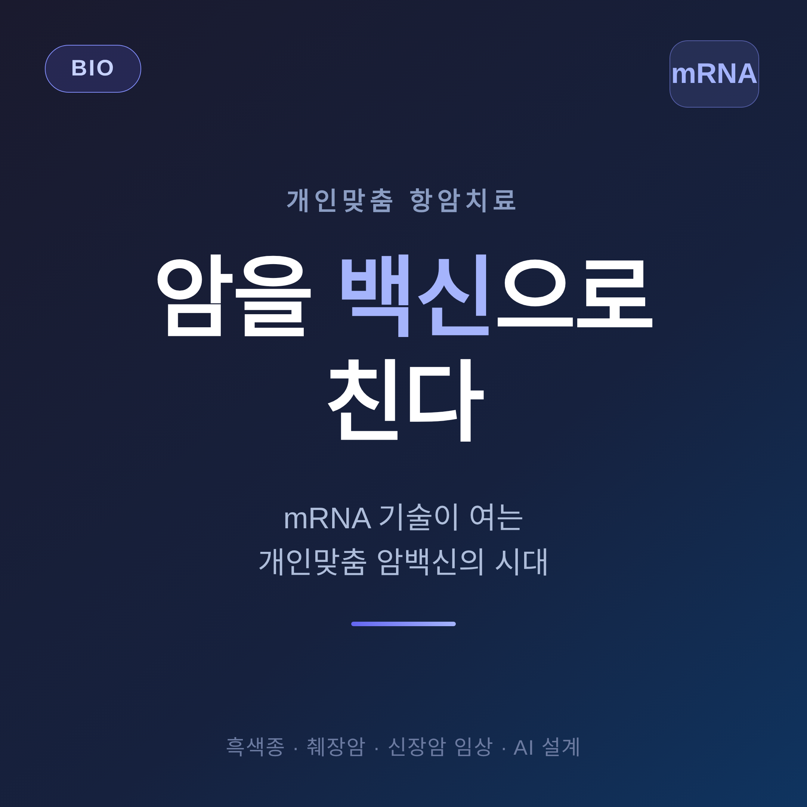
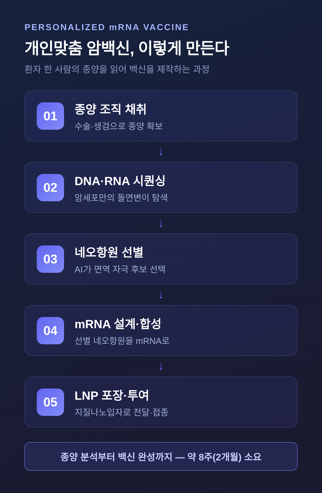
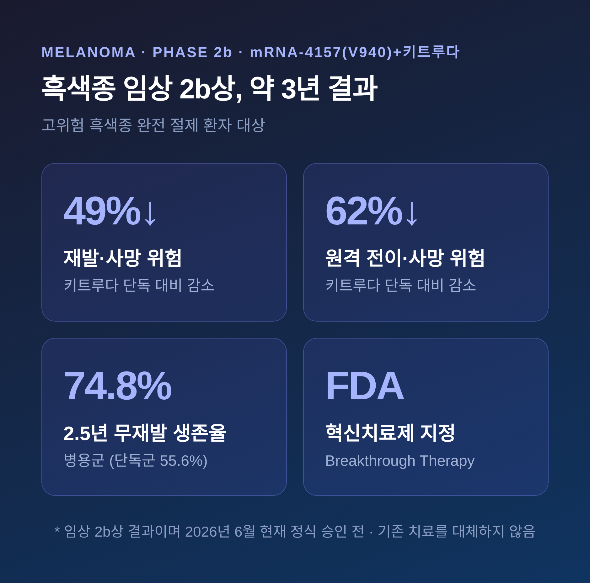

코로나 백신으로 익숙해진 mRNA 기술이 이제 암을 향하고 있습니다. 환자 한 사람의 종양만 겨냥하는 개인맞춤 백신입니다. 이 글에서는 흑색종·췌장암·신장암 임상 결과와 AI의 역할, 그리고 아직 남은 한계까지 차분히 정리해 보겠습니다.
먼저 핵심부터 짧게 말씀드립니다. mRNA 암백신은 아직 정식 승인 전이며, 기존 치료를 대체하지 않습니다. 다만 임상에서 보여준 숫자는 분명 눈여겨볼 만합니다.
백신이라고 하면 병을 미리 막는 주사를 떠올리기 쉽습니다.
이번 이야기는 결이 다릅니다. 여기서 말하는 mRNA 암백신은 대부분 이미 생긴 암을 다루는 치료용입니다. 수술로 종양을 떼어낸 뒤, 남은 암세포의 재발을 면역으로 막는 방식입니다.
원리는 이렇습니다. 암세포는 정상 세포에 없는 돌연변이 단백질 조각을 지닙니다. 이를 네오항원이라 부릅니다. 환자의 암에만 있는 일종의 얼굴입니다.
mRNA 백신은 이 네오항원의 설계도를 몸에 넣습니다. 그러면 우리 세포가 그 조각을 잠깐 만들어내고, 면역세포가 이를 '적의 얼굴'로 학습합니다. 학습을 마친 T세포는 같은 표식을 가진 암세포를 찾아 공격합니다.
예전 코로나 백신이 바이러스의 얼굴을 가르쳤다면, 암백신은 그 환자 암세포의 얼굴을 가르치는 셈입니다. 같은 플랫폼을 암으로 넓힌 것입니다.
개인맞춤이라는 말은 과장이 아닙니다. 백신을 환자 한 명마다 따로 제작합니다.

과정을 따라가 보면 이렇습니다. 먼저 수술이나 생검으로 종양 조직을 얻습니다. 종양과 정상 조직의 유전자를 함께 분석해, 암세포에만 있는 돌연변이를 찾습니다. 그다음 수많은 돌연변이 가운데 면역계가 실제로 반응할 만한 네오항원 후보를 골라냅니다.
이렇게 선별한 네오항원들을 mRNA로 만들고, 지질나노입자로 감싸 몸 안까지 안전하게 전달합니다. 한 백신에 담는 네오항원은 수십 개, 많게는 약 34개에 이릅니다.
종양 분석부터 백신 완성까지 걸리는 시간은 대략 8주, 두 달가량입니다.
네오항원은 종양마다 다르고, 한 종양 안에서도 세포 집단마다 다릅니다. 그래서 하나의 제품을 모두에게 쓸 수 없습니다. 사람마다 다른 백신이 필요한 이유입니다.
데이터가 가장 많이 쌓인 분야는 피부암의 일종인 흑색종입니다. 모더나와 머크가 함께 개발 중인 mRNA-4157(코드명 V940)을 면역관문억제제 키트루다와 함께 쓰는 연구입니다.
수술로 완전히 제거한 고위험 흑색종 환자를 대상으로 한 임상 2b상의 약 3년 추적 결과는 다음과 같습니다.

백신과 키트루다를 함께 쓴 환자군은 키트루다만 쓴 환자군에 비해 재발 또는 사망 위험이 약 49% 낮았습니다. 원격 전이나 사망 위험은 약 62% 낮았습니다. 2.5년 무재발 생존율은 병용군이 74.8%, 단독군이 55.6%였습니다.
이 조합은 미국 FDA로부터 혁신치료제로 지정받았습니다. 흑색종과 폐암을 대상으로 한 임상 3상도 진행 중입니다.
다만 분명히 해둘 것이 있습니다. 위 수치는 2b상 결과이며, 흑색종 mRNA 백신도 2026년 6월 현재 아직 정식 승인 전입니다.
췌장암은 생존율이 낮기로 이름난 난치암입니다. 이곳에서도 개인맞춤 mRNA 백신이 시도되고 있습니다.
메모리얼 슬론 케터링 암센터가 주도한 임상 1상에서, 췌장암 수술 후 환자 16명 중 8명에게서 종양을 겨냥한 면역세포가 활성화됐습니다. 반응이 일어난 환자에서는 백신이 만든 면역세포가 최대 3년까지 몸에 남아 있었습니다. 그 8명 가운데 7명은 수술 후 4~6년 시점에도 생존해 있었습니다.
신장암에서도 신호가 보입니다. 다나파버 암센터 임상에서 3기·4기 신세포암 환자 9명 전원이 백신 투여 후 항암 면역 반응을 일으켰고, 중앙 34.7개월 시점에 모두 재발 없이 지냈습니다.
물론 두 결과 모두 환자 수가 적은 초기 단계입니다. 췌장암 1상에서 면역 반응이 일어난 환자는 절반이었습니다. 큰 규모의 임상에서 같은 결과가 재현될지는 더 지켜봐야 합니다.
개인맞춤 백신의 가장 어려운 대목은 선택입니다. 수백, 수천 개의 돌연변이 중 어떤 네오항원이 면역계를 실제로 자극할지를 골라야 합니다.
여기서 인공지능이 두뇌 역할을 합니다. 딥러닝 모델은 기존 방식보다 면역 자극력 예측을 더 잘 해냅니다. 한 모델은 T세포 면역원성 예측 정확도가 0.88을 넘었고, 다른 모델은 네오항원 예측에서 0.81 수준의 성능을 보였습니다.
국내에서도 KAIST 연구팀이 기존 백신이 T세포에만 치우쳐 있다는 점을 지적하며, B세포 반응까지 반영하는 AI 설계 기술을 내놓았습니다.
AI 덕분에 후보를 더 정밀하게 고르고, 설계 시간도 줄일 수 있게 됐습니다. 8주라는 제작 기간을 더 단축하려는 노력도 같은 흐름 위에 있습니다.
좋은 신호만 있는 것은 아닙니다.
대부분의 연구는 임상 2~3상 단계입니다. 가장 앞선 흑색종조차 아직 승인 전이며, 첫 상용 승인은 빨라야 2027년 이후로 전망됩니다.
모두에게 듣는 치료도 아닙니다. 췌장암 1상에서도 면역 반응이 나타난 환자는 절반에 그쳤습니다. 사람마다 차이가 큽니다.
비용과 시간도 과제입니다. 한 사람마다 8주에 걸쳐 따로 만들어야 하고, 시퀀싱과 합성, 품질관리에 적지 않은 비용이 듭니다. 널리 보급하기까지 넘어야 할 벽입니다.
무엇보다 지금의 암백신은 단독 치료제가 아닙니다. 수술과 항암제, 면역관문억제제 같은 기존 치료에 더하는 보조요법으로 연구되고 있습니다.
정리하면 이렇습니다. mRNA 암백신은 코로나 백신의 성공을 발판 삼아, 한 사람만의 암을 겨냥하는 정밀한 무기로 자라고 있습니다. 흑색종에서 보여준 숫자는 분명 희망적이고, AI는 그 속도를 끌어올리고 있습니다.
다만 아직은 임상이 진행 중인 기술입니다. "암을 백신으로 친다"는 말은 미래형이지, 완료형이 아닙니다.
그럼에도 한 가지는 남습니다 — 면역에게 암의 얼굴을 가르칠 수 있다는 발상이, 이미 사람의 몸 안에서 작동하기 시작했다는 사실입니다.